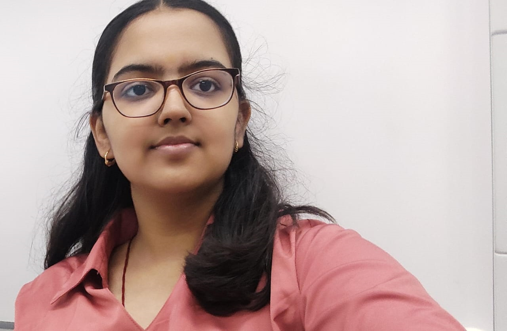

Contact us: rijul.chaturvedi76@gmail.com
Linkedin: linkedin.com/in/rijul-chaturvedi
Github: github.com/Rijul2006
|  | I, Rijul Chaturvedi, am deeply passionate about technology and eager to dive into the world of coding. My enthusiasm for tech drives me to explore various programming languages and development frameworks, aiming to build a solid foundation in software engineering. I am excited about the opportunities that lie ahead, from participating in coding competitions to working on innovative projects, and am committed to honing my skills and expanding my knowledge in this ever-evolving field. |
Well!! two of my favourites are DSA and OOPs
MERN
I think I have 5-6 productive hours of coding